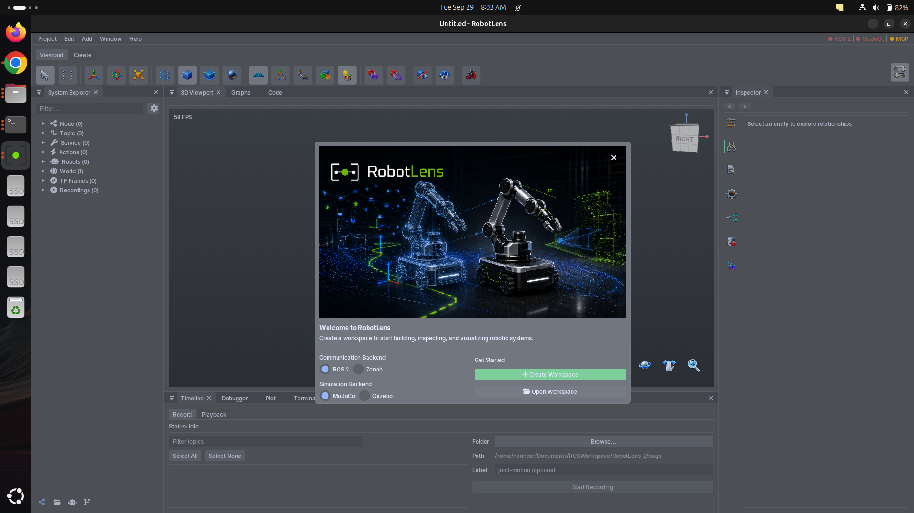

RobotLens
A native ROS 2 engineering workspace. Topology, robot models, TF, diagnostics, logs, 3D visualization, MoveIt, Nav2 and Gazebo in one app, built on one shared graph of the robot system.
Features
Everything in one dockable workspace, sharing one selection model, one timeline and one message pipeline.
01Robot knowledge graph
Nodes, topics, services, TF frames, joints, diagnostics and logs as entities with stable IDs; immutable per-frame snapshots.
02Live ROS 2 discovery
Nodes, endpoints with QoS, services, actions, parameters and TF at ~1 Hz; failure-safe (last good state survives).
03Vulkan viewport
PBR, shadow maps, IBL, SSAO, ray-query contact shadows, MSAA 1–8×, GPU picking, gizmos.
04GPU-driven rendering
Compute frustum culling with indirect draws, Hi-Z occlusion, packed vertices, front-to-back sorting.
0525+ display types
Point clouds (chunked, partially resident), laser scans, maps, markers, paths, cameras, virtual LIDAR.
06Robot models & sim
URDF/SDF parse, render and edit; MoveIt 2, Nav2 and Gazebo workflows with approval steps.
07Health & evidence
12 health rules with evidence citations; a deterministic investigation assistant with 4 LLM adapters.
08MCP server
30+ read-only tools for AI agents, an evidence envelope on every reply, propose → approve → execute.
09Investigation agent
A tool-calling loop with budgets, guards and evals, plus tiny specialist models (“mini-brains”) as tools.
Workers produce, one thread writes, everyone reads a snapshot
What I chose, and what I didn't
| Decision | Rejected | Why |
|---|---|---|
| Single writer + immutable snapshots | Shared graph with locks | No lock contention on the UI path; consistent frames; deterministic add/update/stale/remove deltas |
| Domain graph independent of ROS, ImGui, Vulkan, JSON | ROS types everywhere | Core logic testable without a robot; adapters at the edges; backends swappable (ADR 0022) |
| Stable entity IDs from kind + source + identity | Pointers / counters | Selection survives reconnects, reloads and snapshots; shared across every panel |
| Dirty-domain invalidation (bit flags) | Rebuild the scene on any change | A transform change updates matrices only; a display message re-renders displays only |
| Fence-safe resource retirement | Destroy immediately | With 2 frames in flight the GPU may still read it; avoids device-lost crashes |
| MCP read-only, actions via propose → approve | Let agents act directly | A robot is physical; humans approve with risk shown; the same typed commands as the UI |
| 57 written ADRs | Decisions in chat | Reasons survive; new contributors and AI agents follow the same boundaries |
Incremental snapshots: 60 ms → 1.5 ms
With 12,000 entities, rebuilding the whole snapshot on every change caused visible hitches. I split it into one block per entity kind: rebuild only the changed kinds and share the rest with the previous snapshot.
a72c1bf9, which also stopped one display message from rebuilding the scene (~30 ms).Compute culling writes its own draw calls
Instead of CPU culling and one draw per visible instance, a compute shader tests every instance and writes VkDrawIndirectCommands. The CPU issues one indirect draw per topology group.
Hi-Z: skip what's hidden behind other things
Point clouds bigger than one GPU buffer
A single cloud can exceed one practical GPU allocation, and scrubbing a recording grows memory. Over a byte budget, only visible chunks become resident, in slot arenas with LRU reuse (ADR 0034).
Vertex 56 → 20 bytes, and the cull record
static_asserts on size and offsets, so the CPU struct can never silently drift from the shader.MCP server: agents inspect, humans approve
Measured, not guessed
Incremental graph snapshots
~60 ms → ~1.5 ms with 12k entities: per-kind blocks and structural sharing.
Packed vertices
56 → 20 bytes: u16 positions, octahedral normals, u8 materials, f16 UVs.
Compute culling + indirect draws
The GPU decides visibility and writes its own draw commands.
Occlusion culling
A max-reduced depth pyramid; conservative test; device-lost bug fixed with a regression test.
Front-to-back sorting
Early-Z rejects hidden fragments; less overdraw without a second pass.
Partial residency
Byte-budgeted point clouds; 256 MiB history cap; fence-safe freeing.
Dirty-domain invalidation
11 flags; a display message no longer rebuilds the scene (~30 ms).
Quality profiles
GPU timestamps drive MSAA and render scale; picking stays pixel-exact.
Every change is measured before and after on the same scenario, and the perf snapshot (CPU sections, GPU timestamps per pass, memory by owner) is queryable over MCP.